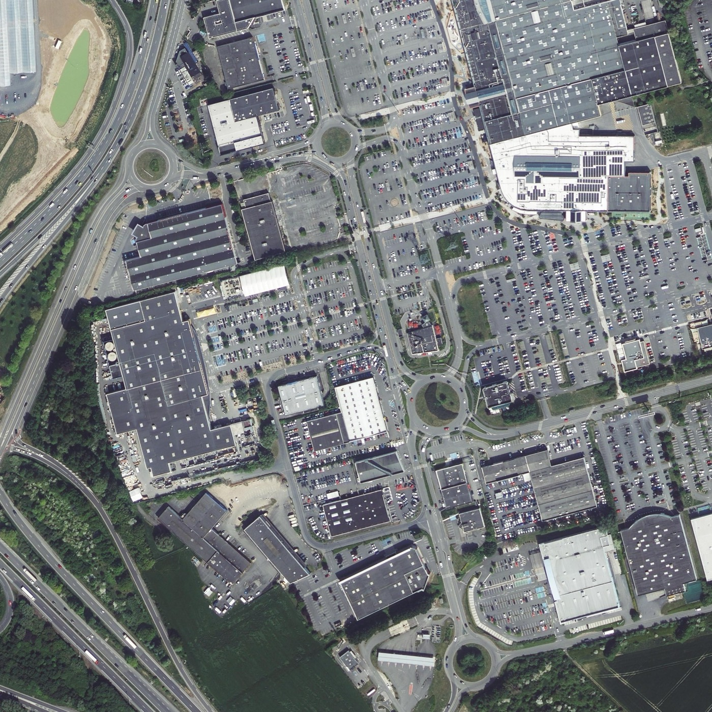

Supporting work 4 · The images
Auchan Englos over time, 2004–2025 UNFINISHED
Prototypes 2 and 3 showed that counting cars is now cheap. But a fund does not want one count; it wants to know whether this quarter was better than the last one. So we took every free aerial photo the French mapping agency IGN has of the Auchan Englos retail park near Lille, and asked what an investor could learn from them.
1. The same car park, seen by IGN
Every photo covers the same 700 m × 700 m box. Click a year. The orange rectangles are what we call the "Auchan zone": Auchan's own car parks. The rest of the photo is the wider retail park, roads included.

Source: IGN BD ORTHO / ORTHOIMAGERY.ORTHOPHOTOS, Licence Ouverte. Resized to 1,400 px for the web.
2. What we know about each photo
| Year | Sharpness (IGN original) | Day the photo was taken | Cars counted in the Auchan zone |
|---|---|---|---|
| 2004 | 50 cm per pixel | not published | TOO COARSE |
| 2009 | 50 cm per pixel | not published | TOO COARSE |
| 2012 | — | — | PHOTO MISSING our download was a copy of 2025 |
| 2015 | 20 cm per pixel | 11 Jun (Thu), 30 Jun (Tue), 1 Jul (Wed) or 10 Jul (Fri) | TO RE-RUN |
| 2018 | 20 cm per pixel | 8 May (Tue, public holiday), 29 Jun (Fri) or 26 Jul (Thu) | NOT RUN YET |
| 2021 | 20 cm per pixel | 1 Jun (Tue), 7 Jun (Mon), 9 Jun (Wed) or 13 Jun (Sun, store closed) | 166 |
| 2025 | 20 cm per pixel | 20 May (Tue) | 875 |
Counts: our browser tool with our own model at its default settings, in the two orange rectangles. A Python copy of the same method gives 168 and 896. Candidate days come from IGN's mosaic layer, which lists the flight days for a département but does not say which day applies to which spot. REAL photos, years and candidate days.
3. What two counts already show
In Auchan's own car parks our tool counts 166 cars in the 2021 photo and 875 in the 2025 photo: +427%. Read naively, that is a spectacular four years for Auchan Englos. It is far more likely to be the day of the photo: the 2021 photo shows a nearly empty car park, and one of the four possible days that June was a Sunday, when the store is closed. You can reproduce this in the tool: pick the 2021 and 2025 samples, press "Auchan car parks" on both, and count.
The 2004 and 2009 photos cannot be counted at all: at 50 cm per pixel a car is only about 4 × 9 pixels, too small for either model. The tool's tests show it needs about 25 cm per pixel or better.
4. What this means for an investor
Too few photos. IGN flies over each French département about every three years. That is seven photos in 21 years, while a listed retailer reports every quarter: over 80 quarters in the same period.
Unknown days. For most years we only know a list of possible days. One candidate in 2018 is a public holiday and one in 2021 is a Sunday, when the store is closed. A full or empty car park could be the day of the week, not the state of the business, as the +427% above shows.
So the costly input is the images. Orbital Insight bought near-daily paid satellite images to build its series. Our tool and Prototypes 2 and 3 show that the AI is now nearly free; this page shows that free images cannot replace the paid, frequent ones. And because any rival can buy the same paid images, the edge spreads, which brings us back to Prototype 1.
5. Limits and what is left to do
Still to do, if the professor approves this part: count 2015 and 2018 with the fixed code, check one area by eye per year, and get the 2012 photo again. Even when done, the series will have only a handful of usable points, on unknown days, and the counts include staff cars as well as customers. On the area we checked by eye, the counters missed about 1 car in 10 on this kind of photo. We will not present any year-to-year change as a change in Auchan's sales.